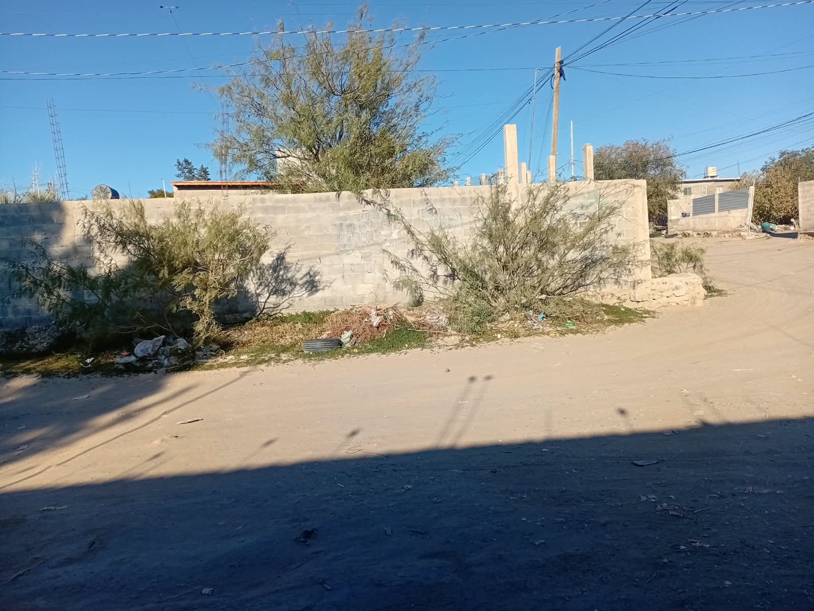

el reciclaje en nuestra comunidad
- ¿qué residuos se generan en nuestra comunidad?
- ¿Qué residuos se generan?
- ¿dónde se acumula la basura en nuestra comunidad?
- ¿qué problemas existen actualmente en nuestra comunidad?
- ¿Qué podemos hacer para solucionar el problema?
¿qué residuos se generan en nuestra comunidad?
En nuestra comunidad, la generación de basura representa un problema ambiental
importante. El crecimiento de la población, las actividades comerciales y el
consumo diario producen grandes cantidades de residuos que necesitan ser
recolectados y manejados correctamente.
De acuerdo con el Gobierno Municipal de Juárez, durante 2024 se recolectaron 507,106
toneladas de basura y durante 2025 la cantidad aumentó a 535,300 toneladas. Esto
demuestra la importancia de mejorar los hábitos de separación y reciclaje en la ciudad.
juárez.gob.mx


¿Qué residuos se generan?
Los principales residuos que se producen en nuestra comunidad son:
- Plásticos: Botellas, bolsas, envases y envolturas.
- Papel y cartón: Periódicos, cajas, revistas y hojas.
- Vidrio: Botellas, frascos y envases.
- Metales: Latas de aluminio y envases metálicos.
- Residuos orgánicos: Restos de comida, frutas, verduras y residuos de jardinería.
- Residuos especiales: Pilas, aparatos electrónicos, llantas y aceites usados, que necesitan un manejo diferente.
¿dónde se acumula la basura en nuestra comunidad?
En Juárez podemos encontrar acumulación de residuos en diferentes lugares como:
El Ayuntamiento ha reportado problemas de terrenos baldíos llenos de basura y ha realizado acciones para sancionar a los responsables de mantener estos espacios en malas condiciones.
juarez.gob.mx


¿qué problemas existen actualmente en nuestra comunidad?
Entre los principales problemas ambientales relacionados con la basura en nuestra comunidad se encuentran:
- Contaminación visual por residuos abandonados en las calles.
- Acumulación de basura en terrenos baldíos.
- Obstrucción de alcantarillas y drenajes.
- Proliferación de insectos y animales que pueden transmitir enfermedades.
- Contaminación del suelo y del agua.
- Quema de basura, que produce humo y gases contaminantes.
- Dispersión de bolsas y residuos por los fuertes vientos de la región.
juarez.gob.mx